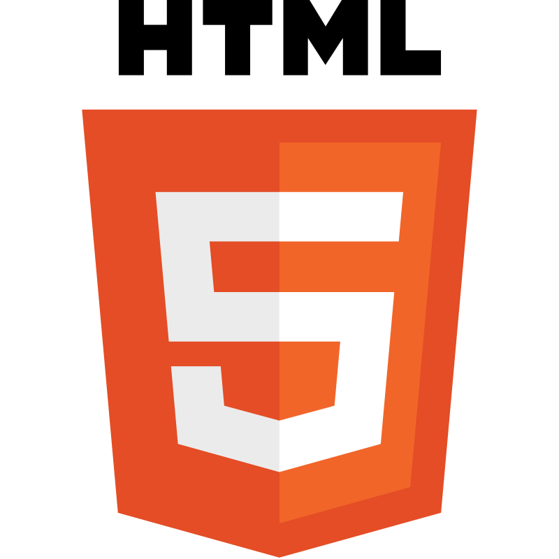
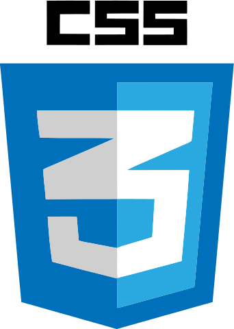

Questão 2.
Crie um código HTML com 2 imagens das linguagens de programação que você gosta e adicionar favicons. OBS: Utilize a propriedade rel="shortcut icon" para adicionar o favicons.

O HTML não é considerado uma linguagem de programação, já que ele não pode criar funcionalidades dinâmicas. Ao invés disso, com o HTML, os usuários podem criar e estruturar seções, parágrafos e links usando elementos, tags e atributos.

CSS é chamado de linguagem Cascading Style Sheet e é usado para estilizar elementos escritos em uma linguagem de marcação como HTML. O CSS separa o conteúdo da representação visual do site.